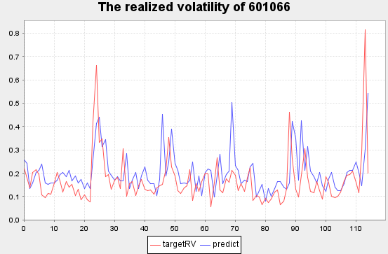
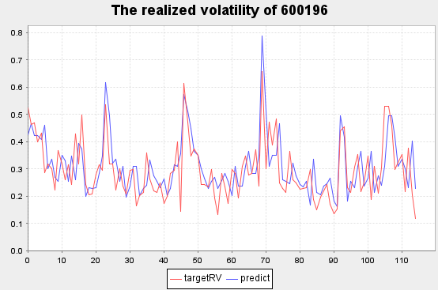
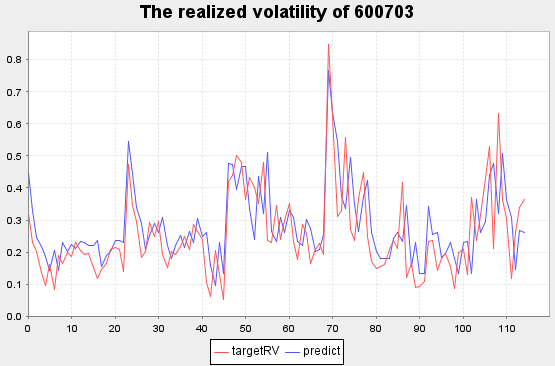

金融实时实际波动率预测
波动率是衡量价格在给定时间内上下波动的程度。在股指期货实时交易的场景中，如果能够快速、准确地预测未来一段时间的波动率，对交易者及时采取有效的风险防范和监控手段具有重要意义。本教程受 Kaggle 的Optiver Realized Volatility Prediction 竞赛项目的启发，完全基于 DolphinDB 时序数据库，实现了中国股市全市场高频快照数据的存储、数据预处理、模型构建和实时波动率预测的应用场景开发。
本教程使用上证 50 成分股 2020 年的 level2 快照数据，构建频率为 10 分钟的高频交易特征（价差、深度不平衡指标、加权平均价格、买卖压力指标、实际波动率）作为模型输入，将未来 10 分钟的波动率作为模型输出，利用 DolphinDB 内置机器学习框架中支持分布式计算的 adaBoostRegressor 算法构建回归模型，使用根均方百分比误差（Root Mean Square Percentage Error, RMSPE）作为评价指标，最终实现了测试集 RMSPE=1.701 的拟合效果，下图展示了部分波动率预测结果。本教程示例代码必须在 1.30.18 及以上版本和 2.00.6 及以上版本的 DolphinDB server 上运行。

将训练后的模型持久化在 DolphinDB 服务端，结合 DolphinDB 流数据处理框架，实时预测上证 50 成分股未来十分钟的实际波动率。
本教程包含内容：
1. Snapshot 数据文件结构
本教程应用的数据源为上交所 level2 快照数据（Snapshot），每幅快照间隔时间为 3 秒或 5 秒，数据文件结构如下：
| 字段 | 含义 | 字段 | 含义 | 字段 | 含义 |
|---|---|---|---|---|---|
| SecurityID | 证券代码 | LowPx | 最低价 | BidPrice[10] | 申买十价 |
| DateTime | 日期时间 | LastPx | 最新价 | BidOrderQty[10] | 申买十量 |
| PreClosePx | 昨收价 | TotalVolumeTrade | 成交总量 | OfferPrice[10] | 申卖十价 |
| OpenPx | 开始价 | TotalValueTrade | 成交总金额 | OfferOrderQty[10] | 申卖十量 |
| HighPx | 最高价 | InstrumentStatus | 交易状态 | …… | …… |
2. 数据预处理
2020 年上交所所有证券的 Snapshot 数据已经提前导入至 DolphinDB 数据库中，一共约 28.75 亿条快照数据，导入方法见 股票行情数据导入实例，一共 174 列。
2.1. 数据样本选择
本教程用到的字段为 Snapshot 中的部分字段，包括：股票代码、快照时间、申买十价、申买十量、申卖十价、申卖十量。
样本为 2020 年上证 50 指数的成分股：
股票代码
601318,600519,600036,600276,601166,600030,600887,600016,601328,601288, 600000,600585,601398,600031,601668,600048,601888,600837,601601,601012, 603259,601688,600309,601988,601211,600009,600104,600690,601818,600703, 600028,601088,600050,601628,601857,601186,600547,601989,601336,600196, 603993,601138,601066,601236,601319,603160,600588,601816,601658,600745
2.2. 特征工程
Bid Ask Spread(BAS)：用于衡量买单价和卖单价的价差
Weighted Averaged Price(WAP)：加权平均价格
Depth Imbalance(DI)：深度不平衡
Press：买卖压力指标
特征数据重采样（10min 窗口，并聚合计算实际波动率）
重采样利用 group by SecurityID, interval(TradeTime, 10m, "none") 方法
Realized Volatility(RV)：实际波动率定义为对数收益率的标准差
股票的价格始终是处于买单价和卖单价之间，因此本项目用加权平均价格来代替股价进行计算

由于日常用法为年化的股票波动率，因此需要对其进行年化，得到年化实际波动率
使用的数据频率是 snapshot 级别，其年化方法需要将标准差乘以全年的 snapshot 数的平方根。
2.3. 数据预处理效率
2.3.1. OLAP 存储引擎
数据预处理效率：
- 分布式表数据总量：2,874,861,174
- 上证 50 指数的成分股数据量：58,257,708
- 处理后的结果表数据量：267,490
- 逻辑 CPU 核数：8
- 耗时：450 秒
2.3.2. TSDB 存储引擎
TSDB 存储引擎作为 DolphinDB 2.00 新特性，其下创建的分布式表的数据类型支持了 Array Vector。与 OLAP 存储引擎相比，在 TSDB 分布式表中，申买十价、申买十量、申卖十价、申卖十量可以使用 Array Vector存储，原 40 列数据合并为 4 列存储，在数据压缩率、数据查询和计算性能上都会有大幅提升。
数据预处理效率：
- 分布式表数据总量：2,874,861,174
- 上证 50 指数的成分股数据量：58,257,708
- 处理后的结果表数据量：267,490
- 逻辑 CPU 核数：8
- 耗时：40 秒
由测试结果可以看出，采用 TSDB 存储引擎的 Array Vector 存储申买十价、申买十量、申卖十价、申卖十量，计算速度是 OLAP 存储引擎的 11 倍。
3. 模型构建
机器学习模型 选择 adaBoostRegressor
评价指标：根均方百分比误差（Root Mean Square Percentage Error, RMSPE）
注意事项：
- DolphinDB 机器学习函数中除了 ols, pca, multinomialNB, kmeans, knn 外，输入均为
sqlDS函数生成的数据源。sqlDS 指定的数据源对象可以是内存表，也可以是存储在磁盘上的分布式表。对于支持分布式计算的机器学习训练函数，sqlDS 指定分布式表为数据源时，系统会自动将计算任务拆解到数据所在服务器，调用集群资源完成分布式计算。 adaBoostRegressor训练返回结果为字典，包含以下 key：numClasses, minImpurityDecrease, maxDepth, numBins, numTrees, maxFeatures, model, modelName, xColNames, learningRate 和 algorithm。其中 model 是一个元组，保存了训练生成的树；modelName 为 "AdaBoost Classifier"。adaBoostRegressor生成的模型可以作为predict函数的输入进行预测应用。
3.1. 建立训练集和测试集
本项目中没有设置验证集，训练集测试集划分：train:test = 172029:73726
login("admin", "123456")
dbName = "dfs://sz50VolatilityDataSet"
tbName = "sz50VolatilityDataSet"
dataset = select * from loadTable(dbName, tbName) where date(TradeTime) between 2020.01.01 : 2020.12.31
def trainTestSplit(x, testRatio) {
xSize = x.size()
testSize =(xSize * (1-testRatio))$INT
return x[0: testSize], x[testSize:xSize]
}
Train, Test = trainTestSplit(dataset, 0.3)3.2. 训练及评价
def RMSPE(a,b)
{
return sqrt(sum(((a-b)\a)*((a-b)\a))\a.size())
}
model = adaBoostRegressor(sqlDS(<select * from Train>), yColName=`targetRV, xColNames=`BAS`DI0`DI1`DI2`DI3`DI4`Press`RV, numTrees=30, maxDepth=16, loss=`square)
predicted = model.predict(Test)
Test[`predict]=predicted
print("RMSPE="+RMSPE(Test.targetRV,predicted))运行结果：
RMSPE=1.701
模型训练耗时：25s调参记录表
| RMSPE | trainTime(ms) | treeNum | maxDepth | features |
|---|---|---|---|---|
| 4.915 | 73240.025 | 60 | 20 | BAS,DI0-4,Press |
| 2.494 | 204696.819 | 60 | 32 | BAS,DI0-9,Press,RV |
| 2.778 | 323223.908 | 100 | 32 | BAS,DI0-9,Press,RV |
| 4.841 | 177327.831 | 60 | 32 | BAS,DI0-9,Press |
| 2.636 | 158605.04 | 60 | 32 | BAS,DI0-4,Press,RV |
| 1.974 | 51815.428 | 60 | 16 | BAS,DI0-4,Press,RV |
| 1.701 | 24782.163 | 30 | 16 | BAS,DI0-4,Press,RV |
| 1.878 | 13719.563 | 16 | 16 | BAS,DI0-4,Press,RV |
| 2.152 | 6854.556 | 8 | 16 | BAS,DI0-4,Press,RV |
回归模型预测性能
| 数据量（条） | 模型预测时间（ms） |
|---|---|
| 1 | 0.614 |
| 10 | 2.271 |
| 100 | 11.446 |
| 1000 | 96.713 |
| 10000 | 959.438 |
通过如上统计可以得出数据量越大，利用 DolphinDB 进行数据处理及模型预测的优势越明显，在实时流处理场景中，可以在短时间内得到计算结果。
3.3. 结果数据可视化
将 Test 表随机选择一支股票，展示 2020.10.19 到 2020.10.23 期间波动率预测情况。
stock_id=(select distinct(SecurityID) from Test)[rand(50,1)[0]].distinct_SecurityID
plot((select targetRV,predict from Test where SecurityID=stock_id, date(TradeTime) between 2020.10.19 : 2020.10.23), title="The realized volatility of"+stock_id,extras={multiYAxes: false})注：
- 红色线条为真实值
- 蓝色线条为预测值
复星医药 [600196] 部分实际波动率预测结果
三安光电 [600703] 部分实际波动率预测结果
4. 实时波动率预测
4.1. 流处理流程
第一个订阅：实时获取 snapshotStream 表中的数据，利用 DolphinDB 内置时序聚合计算引擎，进行窗口为 10 分钟，步长为 1 分钟的滑动窗口计算，核心代码为：
注册时间序列聚合计算引擎
createTimeSeriesEngine(name="aggrFeatures10min", windowSize=600000, step=60000, metrics=metrics, dummyTable=snapshotStream, outputTable=aggrFeatures10min, timeColumn=`TradeTime, useWindowStartTime=true, keyColumn=`SecurityID)订阅 snapshotStream 流数据表中的实时增量数据
subscribeTable(tableName="snapshotStream", actionName="aggrFeatures10min", offset=-1, handler=getStreamEngine("aggrFeatures10min"), msgAsTable=true, batchSize=2000, throttle=1, hash=0, reconnect=true)
第二个订阅：实时获取处理完的 aggrFeatures10min 表中的特征数据，利用已训练好的模型进行波动率预测，并将最终结果写入 result1min 表中，核心代码为：
def predictRV(mutable result1min, model, msg){
startTime = now()
predicted = model.predict(msg)
temp = select TradeTime, SecurityID, predicted as PredictRV, (now()-startTime) as CostTime from msg
result1min.append!(temp)
}
subscribeTable(tableName="aggrFeatures10min", actionName="predictRV", offset=-1, handler=predictRV{result1min, model}, msgAsTable=true, hash=1, reconnect=true)第三个订阅：实时将计算结果表 result1min 中的数据推送给外部消费者消费。
4.2. 快速复现流处理
为了方便用户快速复现实时波动率预测的演示，本教程提供了模型、数据及快速复现流处理代码。下载相关文件后解压缩，将模型和数据文件存储在 DolphinDB 服务端，然后修改代码中的相关路径参数，就可以快速复现上述流处理过程。
训练好的模型（请根据实际 server 版本进行选择）：
- v1.30.18：realizedVolatilityModel_1.30.18.bin
- v2.00.6：realizedVolatilityModel_2.00.6.bin
snapshot 数据（testSnapshot.csv)：2020 年 10 月 19 日 601319, 600519 两只股票共 9507 条数据
快速复现流处理代码中需要修改模型文件和数据文件的路径
/** modified location 1: modelSavePath, csvDataPath */ modelSavePath = "/hdd/hdd9/machineLearning/realizedVolatilityModel_1.30.18.bin" //modelSavePath = "/hdd/hdd9/machineLearning/realizedVolatilityModel_2.00.6.bin" csvDataPath = "/hdd/hdd9/machineLearning/testSnapshot.csv"
4.3. Grafana 实时监控
Grafana 中的 Query 代码：
select gmtime(TradeTime), PredictRV from result1min where SecurityID=`600519注意：因为 Grafana 和 DolphinDB server 的时间存在 8 个小时时区的差异，所以 Grafana 中的 Query 需要用到 gmtime 函数进行时区的转换。
4.4. 实时预测延时统计
在上证 50 成分股实时预测波动率的实际应用场景中，快照数据的产生频率约为每分钟 1000 条记录，可以对结果表 result1min 执行下述语句进行延时统计：
select avg(CostTime) as avgCostTime, min(CostTime) as minCostTime, max(CostTime) as maxCostTime from result1min查询结果：
| avgCostTime | minCostTime | maxCostTime |
|---|---|---|
| 13ms | 7ms | 18ms |
5. 总结
本教程通过使用 DolphinDB 强大的数据处理能力、易用的机器学习框架和流处理框架，实现了股票波动率的实时预测。与 Python 等传统数据处理、模型构建方法相比，DolphinDB 依靠数据存储引擎和计算引擎的高度融合，在数据预处理和模型训练阶段，方便地实现了分布式并行计算，不仅节约了内存资源，同时也提高了计算效率。
结合 DolphinDB 内置的流计算处理框架，为实际生产环境的类似需求（数据处理、模型训练、实时预测）提供了一套完整高效的解决方案。在本教程中，订阅了上证 50 成分股 level2 快照数据，随着真实数据的产生，可以在 13ms 内完成对每只股票未来 10min 的波动率的预测计算，从而对交易策略做出指导。
6. 附录
注意：本教程示例代码必须在 1.30.18 及以上版本和 2.00.6 及以上版本的 DolphinDB server 上运行。
6.1. 脚本
6.2. 模型
6.3. 数据
6.4. 开发环境
- CPU 类型：Intel(R) Xeon(R) Silver 4216 CPU @ 2.10GHz
- 逻辑 CPU 总数：8
- 内存：64GB
- OS：64 位 CentOS Linux 7 (Core)
- 磁盘：SSD 盘，最大读写速率为 520MB/s
- Server 版本：1.30.18, 2.00.6
- Server 部署模式：单节点
- 1.30 配置文件：dolphindb.cfg（volumes, persistenceDir 需要根据实际环境磁盘路径修改）
- 2.00 配置文件：dolphindb.cfg（volumes, persistenceDir, TSDBRedoLogDir 需要根据实际环境磁盘路径修改）
- 单节点部署教程：单节点部署